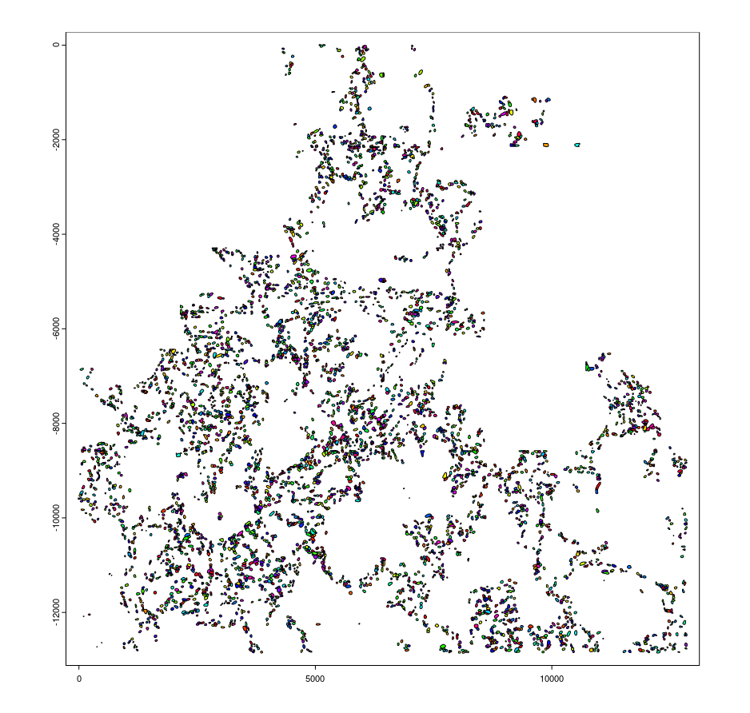
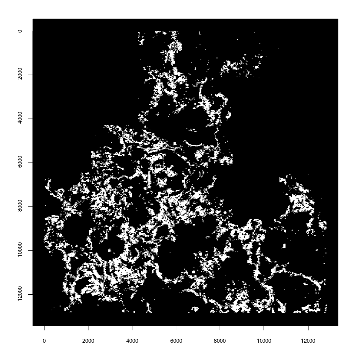
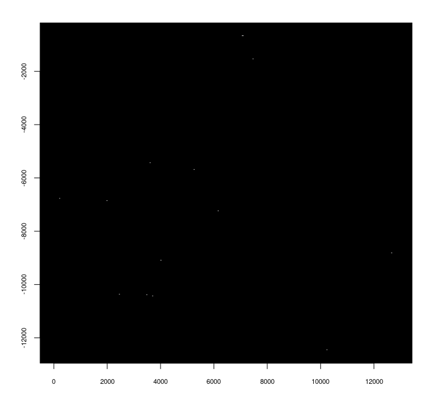
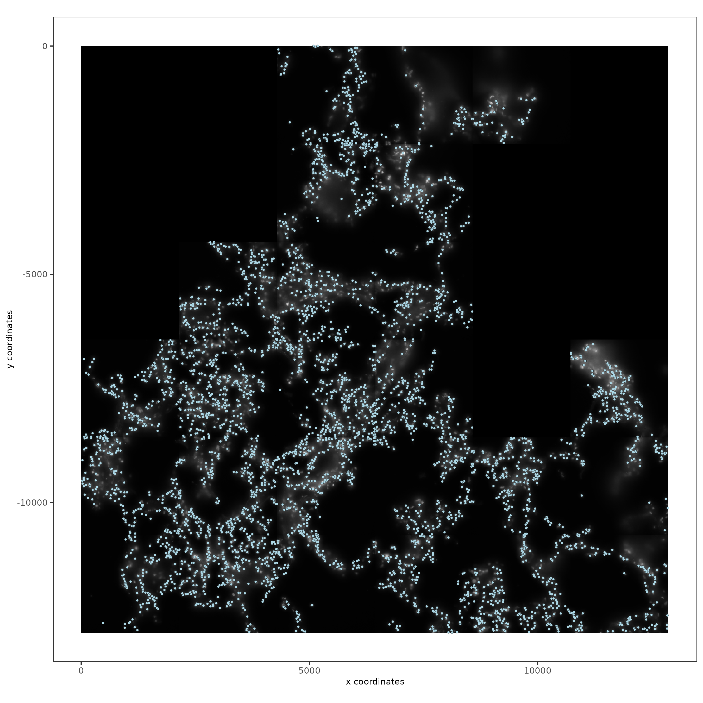
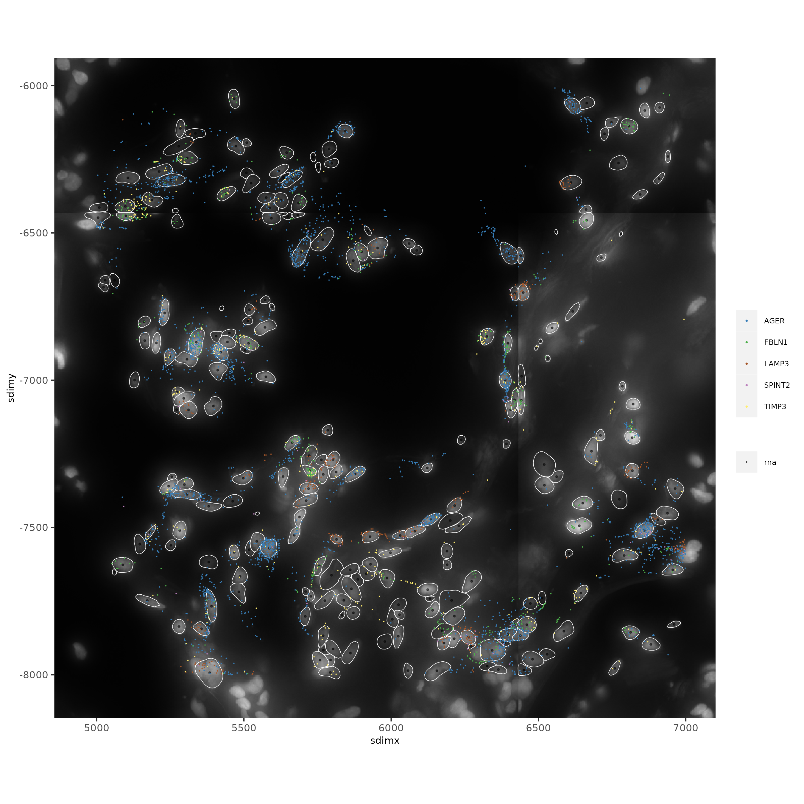

# Ensure Giotto Suite is installed.
if(!"Giotto" %in% installed.packages()) {
devtools::install_github("drieslab/Giotto@Suite")
}
# Ensure GiottoData, a small, helper module for tutorials, is installed.
if(!"GiottoData" %in% installed.packages()) {
devtools::install_github("drieslab/GiottoData") # version 0.2.2 or higher needed
}
library(Giotto)
library(GiottoData)
library(data.table)
# Ensure the Python environment for Giotto has been installed.
genv_exists = checkGiottoEnvironment()
if(!genv_exists){
# The following command need only be run once to install the Giotto environment.
installGiottoEnvironment()
}Resolve Biosciences Molecular Cartography Human Lung
1 Set up Giotto environment
# 1. ** SET WORKING DIRECTORY WHERE PROJECT OUPUTS WILL SAVE TO **
results_folder = '/path/to/save/directory/'
# 2. set giotto python path
# set python path to your preferred python version path
# set python path to NULL if you want to automatically install (only the 1st time) and use the giotto miniconda environment
python_path = NULL
if(is.null(python_path)) {
installGiottoEnvironment()
}
# 3. Create Giotto instructions
# Directly saving plots to the working directory without rendering them in the editor saves time.
instrs = createGiottoInstructions(save_dir = results_folder,
save_plot = TRUE,
show_plot = FALSE,
return_plot = FALSE)2 Dataset Explanation
This vignette covers Giotto object creation and simple exploratory analysis with Resolve Biosciences’ Molecular Cartography platform data using their Human Lung dataset. The data from 873_C1 (one of the three slides available) will be worked with.
This dataset was generated in-house at Resolve Biosciences using customer-provided tissue sections.
The experiment used a custom 34-gene target panel to measure gene expression in situ for
five fresh frozen tissue sections across three Molecular observation slides.
Sample details: Fresh frozen tissue sections of human lung were analyzed to
identify hematopoietic cells and progenitor niches.
…
Created Date: January 2022.
3 Project data
Please first download all the data for sample sample 873_C1 into a common directory and then specify that directory below.
A set of segmentations data was not found at the time of this writing, so we provide segmentations generated using StarDist and QuPath with the dsb2018_heavy_augment.pb model.
# data directory
mc_dir = '/path/to/molecular_cartography/data/directory'
# if wget is installed, set method = 'wget'
# if you run into authentication issues with wget, then add " extra = '--no-check-certificate' "
GiottoData::getSpatialDataset(dataset = 'mol_cart_lung_873_C1', directory = mc_dir, method = 'wget')4 Load Data
experiment_manifest = list(
image_DAPI = list.files(mc_dir, full.names = TRUE, pattern = 'DAPI'),
image_brightfield = list.files(mc_dir, full.names = TRUE, pattern = 'brightfield'),
tx = list.files(mc_dir, full.names = TRUE, pattern = '.txt'),
poly = list.files(mc_dir, full.names = TRUE, pattern = '.geojson')
)
# images
dapi = createGiottoLargeImage(experiment_manifest$image_DAPI)
bf = createGiottoLargeImage(experiment_manifest$image_brightfield)
# transcript detections
tx_all = fread(experiment_manifest$tx)
# segmentations
polys = createGiottoPolygonsFromDfr(paste0(mc_dir, '/Resolve_hLung_stardist.geojson'))
e = terra::ext(polys@spatVector)
# flip polys over y0
polys@spatVector = terra::flip(polys@spatVector)
polys@spatVector = terra::shift(polys@spatVector, dy = -2 * e$ymin)5 Data Processing and Exploration
5.1 Image information
plot(dapi)
plot(bf)

5.2 Polygon information
# Plot polygons with rainbow spectrum colors. Helpful for determining if the
# background is accidentally included as an extra polygon
plot(polys, col = rainbow(100))
5.3 Transcript detections
Description of columns:
V1: x (px)
V2: y (px)
V3: z (confocal step)
V4: gene
V5: NA (fine to remove)
# print all included features
tx_all[, table(V4)]
# format transcript info and invert y values to match image
tx_all[, V5 := NULL]
setnames(tx_all, new = c('x', 'y', 'z', 'feat_ID'))
tx_all[, y := -y]
# Separate out FP features
tx_genes = tx_all[-grep('^FP\ ', feat_ID)]
tx_fp = tx_all[grep('^FP\ ', feat_ID)]
# create giottoPoints
genes_gpnts = createGiottoPoints(tx_genes, feat_type = 'rna')
fp_gpnts = createGiottoPoints(tx_fp, feat_type = 'fp')
# plot to preview giottoPoints
plot(genes_gpnts)
plot(fp_gpnts) 
6 Create Giotto Object
g = createGiottoObjectSubcellular(gpolygons = list(cell = polys),
gpoints = list(rna = genes_gpnts,
fp = fp_gpnts),
largeImages = list(dapi = dapi,
brightfield = bf),
instructions = instrs,
verbose = FALSE)
# calculate polygon centroids for use as spatial locations
g = addSpatialCentroidLocations(g, poly_info = 'cell', spat_loc_name = 'raw')# test plot
spatPlot2D(
g,
show_image = TRUE,
largeImage_name = 'dapi',
point_size = 1,
save_param = list(
save_name = '1_spatplot'
)
)
# crop for better look
g_subset = subsetGiottoLocs(
g,
x_max = 7e3,
x_min = 5e3,
y_max = -6e3,
y_min = -8e3
)
# test plot of subset
spatInSituPlotPoints(
g_subset,
show_image = TRUE,
largeImage_name = 'dapi',
show_polygon = TRUE,
polygon_feat_type = 'cell',
polygon_alpha = 0.1,
polygon_color = 'white',
polygon_line_size = 0.2,
feats = list(rna = featIDs(g)[1:5]),
use_overlap = FALSE,
feat_type = 'rna',
point_size = 0.2,
save_param = list(
save_name = '2_alignment_closeup'
)
) 
7 Aggregate transcript detections
g = calculateOverlapRaster(
g,
name_overlap = 'rna',
feat_info = 'rna',
spatial_info = 'cell'
)
g = overlapToMatrix(g)8 Processing Data
# check effects of filtering settings
filterCombinations(
g,
expression_thresholds = c(1),
feat_det_in_min_cells = c(1, 1),
min_det_feats_per_cell = c(1, 2)
)
# setting minimum of 1 feature detection/cell removes 1077 cells
# filtering
g = filterGiotto(
g,
expression_threshold = 1,
feat_det_in_min_cells = 1,
min_det_feats_per_cell = 1
)
g = normalizeGiotto(g)
g = addStatistics(g)8.1 Plot number of transcripts
spatInSituPlotPoints(
g,
show_polygon = TRUE,
polygon_feat_type = 'cell',
polygon_fill_as_factor = FALSE,
polygon_fill = 'total_expr',
polygon_color = 'white',
polygon_line_size = 0.2
)